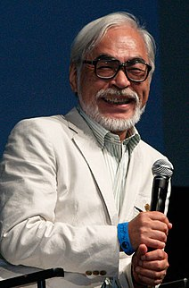
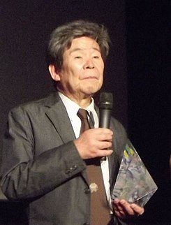

创立初期
在1984年春季，电影公司东映发行了由宫崎骏担任执导、高畑勋负责影片制作人、原彻提供制作场所的动画电影《风之谷》，该影片上映后获得不差的票房，让宫崎骏得到一笔额度不小的作品权利金。因高畑勋当时正计划拍摄以九州福冈县柳川市一带人文风情的纪录片《柳川堀割物语》，宫崎骏便在德间书店任职的友人铃木敏夫所建议之下，将权利金投入作为该纪录片的拍摄资金。
不过《柳川堀割物语》在拍摄没多久后便将资金给耗尽，为了处理费用方面的问题，加上顺势想给宫崎骏与高畑勋往后能有一个方便制作动画的地点，铃木敏夫便提出成立一间新动画室，来借由新动画室制作影片赚取票房以处理《柳川堀割物语》资金问题的提议。在得到德间书店社长德间康快的同意后，铃木敏夫等人在吉祥寺一带找到新动画室的据点，并邀请之前在《风之谷》共事过的原彻担任管理人，新动画室则取名为“吉卜力工作室”（スタジオジブリ）。体制上吉卜力被列为德间书店集团下的一员，工作室的社长则由德间康快兼任。
吉卜力在1985年6月正式成立，首次推出的作品是同由宫崎骏执导、高畑勋担任制作人，在1986年8月2日上映的蒸气朋克题材动画电影《天空之城》。而高畑勋先前的《柳川堀割物语》之后是在1987年8月15日推出。
《天空之城》上映后，铃木敏夫得知出版商新潮社有意踏进动画电影领域时，便想出由德间书店、新潮社各别出资；让宫崎骏、高畑勋各别执导动画的点子。之后铃木敏夫递出了由宫崎骏拍摄宫崎个人原创剧情的《龙猫》，与高畑勋拍摄改编自作家野坂昭如同名小说《萤火虫之墓》的企划。该两部影片在1988年4月16日同一天上映，不过票房表现上跟《天空之城》一样，都没有比在吉卜力之前的《风之谷》出色
 
获得回响
到了1989年7月29日，宫崎骏推出了改编自角野荣子之同名小说的动画电影《魔女宅急便》，此影片上映前铃木敏夫注意到有其他合作人不看好吉卜力的未来后，开始与日本电视台合作以提高曝光度。《魔女宅急便》公开后让吉卜力获得了第一次成功，不仅在票房上达到36亿多日圆（收入约21.5亿日圆），为当年度日本国产电影的榜首，吉卜力也从此作品开始成为往后日本电影票房榜首的常客。
因《魔女宅急便》的成功让吉卜力获得一笔巨额收入，宫崎骏开始进行将吉卜力旗下动画师给正式职员化，报酬方面改成按月给薪而非一般动画室论件计酬的方式，并增加定期招募新人与教育新进职员的制度。铃木敏夫也在1990年从德间书店辞职，将工作重心全放在吉卜力的运作上。
吉卜力在制度修改后首次推出的动画是由高畑勋执导，改编自冈本萤、刀根夕子所创作同名漫画的《回忆点点滴滴》，其中铃木敏夫也在该部作品里首次担任了影片制作人一职。此片在制作费用不低而未被特别看好的情况下，缴出不输上一部《魔女宅急便》的31亿多日圆票房成绩（收入约18.7亿日圆），且为1991年年度日本国产电影票房第一名。
在高畑勋拍摄《回忆点点滴滴》时，宫崎骏除了着手进行《红猪》的制作之外，并开始计划盖一栋全新、空间更大的工作室。因打造新工作室需要一笔钜额费用，原彻在不想增加更多风险考量之下，反对宫崎骏的方案。在德间康快表态支持宫崎骏的做法后，原彻感到自己已经与工作室理念不合，便自行请辞离开了吉卜力。随后宫崎骏物色了小金井市一带作为据点，在1992年将新工作室打造完成。同一年夏季上映的《红猪》，则缔造出吉卜力作品里的新纪录48亿多日圆票房（收入约28亿日圆），也同样为1992年年度日本国产电影票房榜首。
搬迁到新工作室之后为了想给年轻成员一试长才的机会，铃木敏夫让制作部门的高桥望自行企划出一份案子，内容是与执导过《橙路》剧场版、《梦回绿园》电视动画等作品的望月智充合作，一同将作家冰室冴子的青年小说《海潮之声》改编成动画作品[33]。《海潮之声》是吉卜力首部的电视动画，于1993年5月5日在日本电视台上播出时有创下17.4%的高收视率。虽然此部作品起初的方向是制作进度快、内容又好的动画，但过程中仍有发生预算超出、完成时间晚于预期的情况，也让铃木敏夫评估吉卜力若想踏入电视动画领域会是一个考验。
1994年夏季轮到高畑勋推出以狸子拟人化为题材的《平成狸合战》，此片在日本上映时刚好与当年迪士尼热门动画《狮子王》同一档期推出，而《平成狸合战》之后赢过《狮子王》得到40亿多日圆票房（收入约26亿日圆），让吉卜力连续四次拿下年度日本国产电影票房作品的榜首。
后续宫崎骏想给从加入吉卜力之前就一直与他跟高畑勋合作的同事近藤喜文一个表现机会，让他执导改编自漫画家柊葵的同名作品《梦幻街少女》，该部为宫崎骏过去欣赏的少女漫画之一。《梦幻街少女》上映后票房获得不逊于宫崎、高畑作品的31亿多日圆（收入约18亿日圆），同样也有夺得年度最卖座日本国产电影作品的荣誉。
票房纪录
1996年7月迪士尼日本分公司宣布与吉卜力合作，将协助吉卜力在电影市场、影片产品发行的相关业务。
1997年7月12日宫崎骏推出日本时代剧风格动画《魔法公主》，最初铃木敏夫考量到宫崎骏当时的年龄状况，便想以这部片作为吉卜力的句点，因此有与各家广告商联合凑出高达近60亿日圆费用来做宣传。《魔法公主》上映后，累积的票房数字达到过去日本电影历史中未曾出现过的193亿日圆，成为当时日本票房里有史以来最卖座的影片。另外因前一年有与迪士尼日本分公司开始合作的关系，此片成为吉卜力第一部正式进军国际市场的作品。
1998年1月21日近藤喜文因主动脉剥离离世，《魔法公主》为他生前最后参与的吉卜力作品，《梦幻街少女》则是他生前唯一执导过的电影动画。
《魔法公主》上映结束后吉卜力未如铃木敏夫先前所设想般地要进行解散，仍有继续制作动画下去。1999年夏季这回是推出高畑勋改编自石井寿一所创作四格漫画的《我的邻居山田君》，不同于过往吉卜力作品是交由东宝发行，《我的邻居山田君》是改成给松竹公司负责。此影片是吉卜力自《魔女宅急便》后第一次的失败，累积的票房仅有约15亿日圆。
2000年9月20日德间康快因病离世，之后与德间书店有往来关系的三井住友银行旗下的牧田谦吾、以及德间书店里的松下武义都有接任一阵子吉卜力社长职务。
2001年夏季上映了由宫崎骏所执导，以一名小女孩误闯异世界为剧情的奇幻冒险动画《神隐少女》，当时铃木敏夫已将发行商改回先前的东宝，票房方面起初被众人评估大约是宫崎骏前一部作品《魔法公主》的一半左右。《神隐少女》上映后大众的回响让吉卜力达到一个新里程碑，所创下300亿日圆以上票房大幅超越过去的《魔法公主》，也在上映后将近二十年的时间里，为日本电影票房中的最高纪录。直到2020年12月期间，才被改编自漫画家吾峠呼世晴作品《鬼灭之刃》的动画电影《鬼灭之刃剧场版 无限列车篇》，突破324亿日圆的票房成绩给改写。

青年导演的尝试
吉卜力过去在1999年曾收到一间主题乐园的请求专案，希望能制作约20分钟长、以猫咪为主题的短片，当时宫崎骏有提出让《梦幻街少女》中出现的猫男爵（バロン）等角色出现在该短片里相关建议。后续该专案虽被对方取消，不过有被顺势当成测试工作室里年轻成员表现的机会。之后铃木敏夫相中了森田宏幸来进行挑战，所完成的作品为2002年7月19日上映的《猫的报恩》，并被视为是《梦幻街少女》的姊妹作。该片的长度约70多分钟，有一同与另名吉卜力原画师百濑义行执导的短篇动画《Ghiblies episode2》一同上映，之后有获得60多亿日圆票房以及当年度最卖座国产电影成绩。
2004年11月20日宫崎骏推出了改编自英国作家戴安娜·温尼·琼斯同名著作的《哈尔的移动城堡》，该片原先计划邀请细田守执导，但因细田守过去所经历的东映动画体系行事风格与吉卜力不合，而使得该计划取消。《哈尔的移动城堡》的票房成绩有逼近200亿日圆，在由新海诚所执导的2016年动画《你的名字。》出现之前，曾一度是次于《神隐少女》的日本最卖座动画作品第二名。
吉卜力在2005年3月期间正式从德间书店集团下拆分出来，成为独立的公司“株式会社吉卜力工作室”（株式会社スタジオジブリ），新社长的人选是由铃木敏夫出面担任。
2006年夏季吉卜力推出由宫崎骏长子宫崎吾朗首次担任导演的电影动画《地海战记》，该作品改编自美国作家厄休拉·勒古恩著作《地海》系列，为宫崎骏个人最爱好的小说之一。宫崎吾朗最初是将《地海》改编成动画一事的企划案讨论成员之一，之后铃木敏夫考量可以试试让吾朗担任导演，而宫崎骏曾对此决策向铃木敏夫表达不满。此片上映后获得不低的76亿多日圆票房，但有引来褒贬不一的反应。
到了2008年2月，过去在迪士尼日本分公司任职、与吉卜力有多次往来的星野康二接任了铃木敏夫的位子，成为吉卜力的新社长。同年7月19日宫崎骏推出《崖上的波妞》，在该部片中他完全以手绘的方式来表达片中海浪拍打的动态，其画面表现深受铃木敏夫高度肯定，成绩上也成为宫崎骏另一部票房破百亿日圆的作品。
《崖上的波妞》上映的当年年底，宫崎骏提出了“吉卜力5年经营计划”（スタジオジブリ経営5カ年計画）的构想，预定先在2009至2011年的3年期间推出由年轻人员制作的动画，之后2012到2013年的2年里推出重量级作品。之后宫崎骏与铃木敏夫挑选了吉卜力的年轻动画师米林宏昌来担任导演，让他执导基于英国作家玛丽·诺顿著作《地板下的小矮人》所改编的《借东西的小人阿莉埃蒂》。该片在2010年10月17日公开后，票房成绩有达到逼近百亿的92亿多日圆，为当年日本国产电影票房榜首。
吉卜力5年经营计划的第二部年轻人作品是由宫崎吾朗执导的《红花坂上的海》，该部是改编由佐山哲郎、高桥千鹤共同创作的少女漫画，也是宫崎骏个人喜爱的漫画作品之一。此部票房上虽不如吾朗首部作品《地海战记》亮眼，但仍为当年最卖座的日本国产电影。
中止制作
2012年12月期间，铃木敏夫对外宣布将要把宫崎骏的《风起了》与高畑勋的《辉夜姬物语》敲定在同一日上映，这是继过去《龙猫》与《萤火虫之墓》之后再一次把两人的新作给同日公开。不过后续因高畑勋在进度上落后，让宫崎骏的《风起了》先自行在2013年7月20日推出。该片是宫崎骏第五部票房破百亿日圆的作品，宫崎骏也在该片上映2个月后发表个人引退声明，表示不再投入长篇电影动画的制作。高畑勋的《辉夜姬物语》则接在同年11月23日公开，此部耗时了约8年时间拍摄，并且投入近达50亿日圆的制作费用，也是高畑勋生平的最后一部动画电影。
在2014年夏季吉卜力以米林宏昌担任导演、西村义明负责影片制作人的新组合，推出改编自英国小说家琼安·G·罗宾森所著作同名小说的动画《回忆中的玛妮》。不过此片在上映一个月后，铃木敏夫考虑到宫崎骏先前的退休，加上吉卜力本质上是属于宫崎骏的制片场所便想先让工作室休息一阵子，于是对外公布将停止吉卜力动画制作部门的运作，不过工作室内的版权管理方面事务则会继续进行。
再起
吉卜力停止动画制作解散了相关人员后，不久米林宏昌与西村义明离开了吉卜力，在2015年4月另外成立了工作室Studio Ponoc来继续拍摄电影动画作品。2016年9月17日吉卜力推出与法国影片公司Why Not Productions、Wild Bunch等厂商合作，由来自荷兰的动画导演麦可·度德威特所执导作品《红海龟》，该影片是过去2006年期间投入进行的企划。
宫崎骏在先前宣布退休后的一段时间里，发现到仍有他觉得值得做的题材，便撤回了退休宣言。为了完成宫崎骏所想制作的新作品《你想活出怎样的人生》，吉卜力在2017年5月19日公开出征求动画师讯息，让动画制作部门再次开始运作。为了配合宫崎骏的回归，吉卜力在制度上做了调整，于同年11月让吉卜力美术馆馆长中岛清文接替星野康二的位子成为吉卜力新任社长，星野康二则改担任吉卜力的会长。
2018年3月21日宫崎骏推出在吉卜力美术馆播放的短篇动画《毛毛虫波罗》，此为他过去一直想尝试挑战的以虫子为题材作品。不过在隔月的5日高畑勋因肺癌离世，宫崎骏与铃木敏夫之后在5月15日以吉卜力美术馆作为场地，举行高畑勋的告别会。
2020年1月1日吉卜力在官方网站上公开向大众问候的电子新年贺卡，在贺卡里除提及到未来将成立的吉卜力公园之外，也表明已有两部动画新作正在进行中。其中一篇是宫崎骏先前宣布的《你想活出怎样的人生》，另一部则是宫崎吾朗以CG制作、内容改自戴安娜·温尼·琼斯著作《Earwig and the Witch》的电视动画《安雅与魔女》。
Films Produced | Intro Video